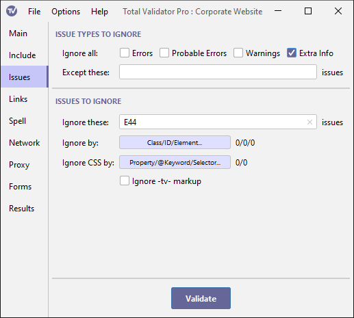

Documentation > Issues options
These options control which issues to ignore. Alternative methods and further information may be found in the special Ignoring issues topic.

Issue types to ignore
Ignore all
There are four types of issue which may be reported, each of which may be ignored by selecting them here:
- Errors: These are core violations of one of the tests you have selected.
- Probable Errors: These are issues which should only be ignored if a solution has been explicitly provided.
- Warnings: These are either potential errors, or issues worth addressing to improve pages.
- Extra Info: This is additional guidance, often where a manual check is recommended.
Except these issues
If you select one or more Ignore types, you can use this option to add specific issues you still wish to be reported on. Total Validator will then ignore all issues of the selected types except those listed.
This must be a comma separated list of issues codes to test for. For example, if you wish to ignore all errors and warnings except E601 and W600 you would set the Ignore types options to Errors and Warnings and then enter: E601,W600
You should enter issues that match a selected Ignore type otherwise they will be ignored. For example; if you enter W600 but don't select the Warnings type, then W600 issues can still appear.
See the Reference for a list of the codes which may appear.
If you do not list any issues for a specific test then you should turn that test off in the Main options otherwise it will slow the testing process unnecessarily.
Issues to ignore
Ignore these issues
Use this option to ignore issues across all the pages tested.
This must be a comma separated list of issue codes to ignore. For example: E601, W600, E404, P861. See the Reference for a list of the codes which may appear.
Ignore by
This option allows you to enter a list of ids, classes, and HTML elements, together with a list of those issues you wish to ignore for each one. Note that this only applies to the HTML tag itself and not any descendant HTML elements. Click the button to edit the table of items to ignore, adding a row for each item.
For ids, the first column should contain the id prefixed with a '#', just as in CSS. After the '#' the rest of the id can be a regular expression to match more than one id. Note that entries in the first column are case-sensitive. If you wish to ignore all issues for an id then leave the second column blank, otherwise add a comma separated list of the issues you wish to ignore like this: E601,W600,E404,P861. See the Reference for a list of the codes which may appear.
You can also add a row to match by class (prefix the class name with a '.' as in CSS). Again, you can use a regular expression, and choose to ignore all issues or list specific ones.
Anything in the first column that doesn't begin with '#' or a '.' is assumed to be an element name (which may be a regular expression), so you can also ignore issues by element name if you wish.
You can also combine the element and class parts to make the rule more specific as follows: element&class (note that the '.' prefix for the class is not required here). For example, to list issues to ignore for <div class="myClass" ...>, you would put div&myClass in the first column.
Because each of the items in the first column are treated as regular expressions, if your class or id contains a special regular expression character \^$.|?*+()[{ you must prefix these with '\' to treat them as normal characters: div&\$myclassname
Ignore CSS by
This option allows you to enter a list of CSS properties, at-keywords and selectors, together with a list of those issues you wish to ignore for each one. Click the button to edit the table of items to ignore, adding a row for each item.
For at-keywords, the first column should contain the at-keyword beginning with an '@', just as in CSS. After the '@' the rest of the at-keyword can be a regular expression to match more than one at-keyword. Note that entries in the first column are case-sensitive. If you wish to ignore all issues for an at-keyword then leave the second column blank, otherwise add a comma separated list of the issues you wish to ignore like this: E722,E724,W778. See the Reference for a list of the codes which may appear.
You can also add a row to match by selector. To distinguish it from a property name, you must prefix it with a '%'. Again, you can use a regular expression, and choose to ignore all issues or list specific ones.
You can also add a row to match by property name. Anything in the first column that doesn't begin with '@' or '%' is assumed to be a property name (which may be a regular expression)
You can also combine the property and at-keyword or selector parts to make the rule more specific as follows: property&@keyword, or property&selector (note that the '%' prefix for the selector is not required here). For example, to list issues to ignore for font-height in div {font-height: ...}, you would put font-height&div in the first column.
Because each of the items in the first column are treated as regular expressions, if your selector contains a special regular expression character \^$.|?*+()[{ you must prefix these with '\' to treat them as normal characters: font-height&\.myclassname
Ignore -tv- markup
Use this option to ignore any -tv- markup you've added to pages to provide the finest control over ignoring issues.
The use of this markup, and when you may wish to ignore it, may be found in the special Ignoring issues topic.